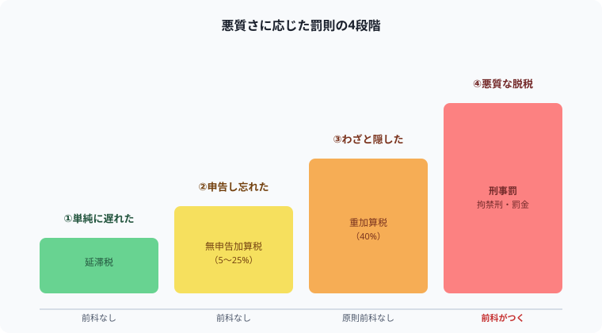

確定申告が遅れたら・嘘をついたらどうなる？罰金・前科・逮捕の境界線を解説【2026年版】
「確定申告、忘れてた……逮捕されるの！？」と検索してこのページに来た人、まず落ち着いてください（笑）。ほとんどのケースは逮捕とは無縁の「行政罰」で済みます。
ただし、悪質さの度合いによって罰則の重さは4段階に分かれていて、その境界線を知らないと必要以上に不安になったり、逆に軽く見すぎて痛い目を見たりします。国税庁の一次情報をもとに、正直に整理します！
記事の末尾のほうにある【いいねボタン】をポチッと押してもらえると、僕の毎日の勉強と執筆のモチベーションになるので、めちゃくちゃ嬉しいです！
結論：罰則は4段階。前科がつくのはごく一部の悪質なケースだけ
確定申告の遅延・虚偽申告の罰則は、悪質さに応じて次の4段階に分かれます。数字が大きくなるほど重くなり、前科がつく「刑事罰」に至るのは最終段階（意図的な脱税）だけです。
| 段階 | 内容 | ペナルティ | 前科 |
|---|---|---|---|
| ①単純に遅れた | 期限に間に合わなかった | 延滞税 | つかない |
| ②申告し忘れた | 期限後に申告 | 無申告加算税＋延滞税 | つかない |
| ③わざと隠した | 仮装・隠蔽があった | 重加算税（40%）＋延滞税 | 原則つかない |
| ④悪質な脱税 | 意図的に多額を偽装 | 刑事罰（拘禁刑・罰金） | つく |

①単純に遅れた：延滞税
期限内に納税できなかった場合、遅れた日数に応じて延滞税がかかります。令和7年の税率は、法定納期限の翌日から2ヶ月を経過する日までが年2.4%、それ以降は年8.7%です（税率は年によって見直される場合があります）。
②申告し忘れた：無申告加算税＋延滞税
期限後に申告した場合、延滞税に加えて無申告加算税がかかります。
納付すべき税額の5%です。「忘れていたことに自分で気づいて、指摘される前に申告した」場合はこの軽い割合で済みます。
納付税額のうち50万円までの部分は10%、50万円超300万円までの部分は15%、300万円を超える部分は25%です（令和6年1月1日以後に法定申告期限が到来するものに適用）。
③わざと隠した：重加算税
単なるミスではなく、事実を仮装・隠蔽した（意図的に嘘をついた）と判断された場合は、無申告加算税や過少申告加算税に代えて重加算税が課されます。割合は納付すべき税額の40%（無申告の場合）と、①②に比べて大幅に重くなります。
④悪質な脱税：刑事罰（逮捕・前科）
「偽りその他不正の行為」によって意図的に多額の税を免れたと判断されると、所得税法違反として刑事罰の対象になります。国税庁の査察部門（通称「マルサ」）による強制調査を経て、検察に告発されるケースです。
ただし、ここまで至るのは意図的・多額・悪質なケースに限られます。単純な申告漏れや解釈の違いでいきなり逮捕されることは、通常ありません。
もし申告を忘れていることに気づいたら
- 気づいた時点で、できるだけ早く自主的に申告する（無申告加算税が軽く済む）
- 放置せず、わからない部分は税務署や税理士に相談する
- 意図的にごまかそうとせず、正直に申告する（重加算税・刑事罰のリスクを避ける）
まとめ
- 罰則は「延滞税→無申告加算税→重加算税→刑事罰」の4段階。重くなるほど悪質性が高い
- 前科がつくのは、意図的な偽装を伴う悪質な脱税（刑事罰）に限られる
- 単純な遅れ・うっかりミスは行政罰（お金のペナルティ）で済み、逮捕とは無縁
- 気づいたら指摘される前に自主的に申告するのが、ペナルティを軽くする一番の方法
- 脱税の刑事罰は10年以下の拘禁刑または1,000万円以下の罰金（またはその両方）
⚔ 「後回し」を防ぐ仕組みを、勉強にも税務にも
確定申告も資格の勉強も、「後で」が一番危険です。Study Questなら毎日の勉強時間を記録しながら、コツコツ続ける習慣をゲーム感覚で作れます。完全無料。
無料で始める →「バレたら逮捕」というイメージだけが先行しがちですが、実際は悪質さに応じた段階があります。正しく知っておけば、必要以上に怖がる必要はありません。
ここまで読んでくれてありがとうございます！もしこの記事が役に立ったら、僕の毎日の勉強と執筆のモチベーション維持のために、この下にある【いいねボタン】をポチッと押してもらえると、めちゃくちゃ励みになります。